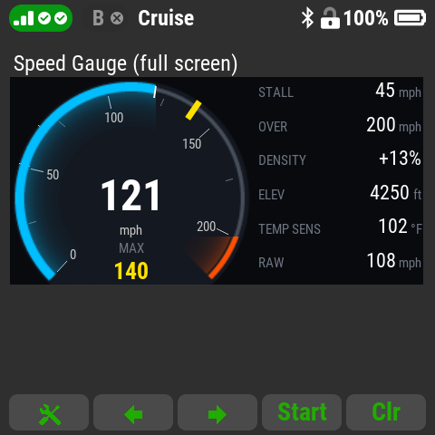
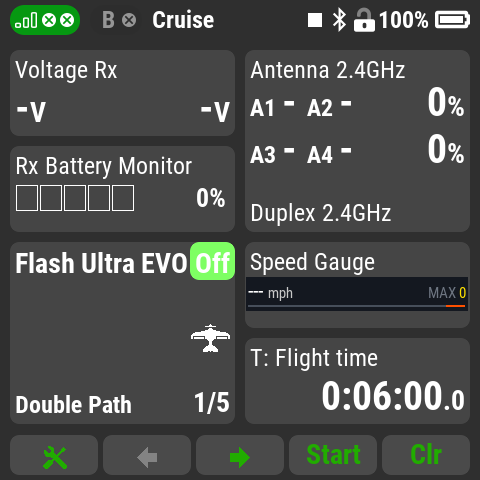

Speed Gauge
Spoken airspeed callouts, stall and overspeed warnings, and a
speedometer gauge for the DS-24 II / DC-24 II.

- Speed callouts in a clear voice: more often when the
speed changes, every few seconds below landing speed, or a fast
number-only mode on a switch.
- Callouts wait until the model first passes Callouts start
above (default 30 mph), and are never spoken below 5 mph.
- Max speed callout shortly after each new peak.
- Warnings: stall (at most twice per slowdown), overspeed
and "airspeed alive", with stick vibration.
- Gauge: a speed bar (single size), a small dial (double
size) or a full-screen dial with stall, overspeed, air density,
elevation, temperature and raw sensor speed.
- Air density correction (optional): true airspeed from
field elevation and the temperature: standard, entered by hand,
or live from a sensor such as the MSpeed's.
- Works with a pitot airspeed sensor (e.g. JETI MSpeed) or GPS
speed.

Setting up
- Add Speed Gauge in Applications - User Applications.
- In its settings choose the speed sensor and units, assign a
callouts switch, and set your model's landing, stall and
overspeed speeds. Set Gauge max limit to your sensor's top
speed (MSpeed: 350 km/h / 215 mph; MSpeed 450 EX: 450 km/h /
280 mph).
- Put Speed Gauge or Speed Gauge (full screen) on
a page in Timers/Sensors - Displayed telemetry.
Version: 0.3.0
Compatibility: DC/DS-24II, firmware 6.x
Based on DFM Speed Announcer by DFM (Dave McQueeney), MIT
license. Voice: Piper text-to-speech with the "Amy" voice by Mycroft /
Rhasspy; the voice files are licensed CC BY-SA 4.0. Speed Gauge: MIT
license, Copyright (c) 2026 Aaron George.
Source and full credits:
github.com/Flazzarious/jeti-lua-apps